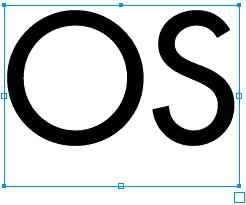

| |
August 15,
1999
Making Objects Look Like
They're Being Drawn
This Flash tip will show you exactly
how I did the title animation for this site. Taking objects or text and
following the below steps, you too will be able to WOW your friends on how
to make things look like they are being drawn on the screen.
The process is very fast and easy. Much more
so using our favorite drawing program, FreeHand™. The tip is broken down
into two sections, starting with the FreeHand steps, then ending
with the Flash steps.
Version: 7-8
|
|
| |
FreeHand Steps
|  |
|
1) The first step
is to of course, choose the shapes you want to be drawn. For this
exercise, I'm choosing some text as it seems to be the most
difficult, and many people use Flash for text effects anyway.
Above are two simple letters I'll
be using. The less text the better, because the amount of
Flash work later will be determined here.
|
|
|
2) While the text
is still selected, Convert it Paths. Then Ungroup and
Split them if they have knockouts (such as the O).
While those shapes are still
selected, remove the Fill and give them a Basic Line like
shown above. |
|
|
3) Keeping your
shapes selected, do the operation Xtras -> Distort -> Add
Points (This can also be accessed in the Operations palette).
By adding more points, this creates
more segments in the shapes, thus making the final animation
smoother. For more complex shapes like above, you should be
very careful not to add too many points as the Flash steps will take
much more time. In fact in some cases such as the S above, I
went in and took out a couple of points to make things easier on me
later.
You'll see it all come together as
we go on. |
|
|
4) You must pay
close attention in this next step. Deselect all of the shapes. Now,
click+drag around all of the shapes. This will make all of
the shapes' anchor points active. You must make sure
that you select every anchor point of the shapes.
After doing that, do the
Split command. This will break up all of the shapes into
individual segments between all of the selected anchor
points. |
|
|
5) Now each
letter is setup for exporting to Flash. Starting with the first
shape (letter O), select the segments and Copy
them.
In a new document, create an
empty text box. Then Paste in the copied shapes.
While the text box is still
selected do Xtras -> Animate -> Release to Layers
(Note: You may see the segments
disappear when Releasing to layers, don't be alarmed, it should
still work). Next export this document as an Adobe Illustrator™
7.x document.
This will make sure that the
segments that were released to each layer will stay intact when
imported into Flash.
Repeat this step for any
other shapes or letters you may have. Now on to the Flash
Steps. |
Flash
Steps
|
|
1) Create a new
Flash movie document. Next create a new blank Symbol that
you'll be creating your first drawn object in.
Give it a name and hit
OK. |
|
|
2) In this new
Symbol, Import the Adobe Illustrator™ file from the FreeHand
step. You should see all of the segments selected as well as all of
the layers they were released to.
|
|
|
3) Get those
fingers ready, you'll be using some keyboard shortcuts that
will make this next step fly!
Deselect everything. Now click on
the player head on the first frame. Press F5 to create a new
frame on all of the layers.
Starting with the first layer,
click+drag the Keyframe over to the right one frame.
Next move the player head back to the left one frame by hitting the
< (period) key. Then hit F5 again to add a frame to
every layer.
Carefully watch the animated GIF
above to get a better idea of what I mean.
Continue this process for as many
layers as you have. You may notice during this process, that
some segments are out of order. You can fix this as you're working,
moving the layers up or down to make them in order of how the object
should animate. |
|
|
|
4) Once you're
done, play the Symbol to make sure that all the segments are in
order and that the animation is as smooth as you want it. Again,
repeat Steps 1-3 for any other shapes you may want.
After all of the animation process
was finished (which took about 10-20 minutes) I now have the
final Flash Drawing Animation shown above. Not bad eh?
Like I said before, once you get
going with this, it's very easy and fast to create.
|
Uses
|
|
|
You've seen this effect in my
FreeHand Source title, Now you can take these Movie Symbols and add
them to your own animation. Above, I used the same graphics and
added special touches such as a flare that acts as the
drawing device, and the falling pieces after the objects are
"cut" out. Very fun!
As an extra bonus, I've provided
the original Flash working file (.FLA) of the above movie for
you to take a look at and have fun with. Just click on the below
link. |
Now that you've got the basics down for
making objects look like they're being drawn, you can go off and apply
this same technique to a variety of shapes. Have fun with
it!
|
|